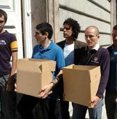

Este texto apareció originalmente publicado en el sitio español RadicalGay
La Iglesia se erige contra la adopción por parte de homosexuales y defiende su postura alegando que un niño tendrá graves dificultades en su desarrollo si no tiene padre y madre
Es increíble que pese a la patente evolución de la sociedad y por tanto de la diversidad de los tipos de familia, la Iglesia persista en apoyar patrones antiguos y trasnochados, centrándose en valores como la condición sexual y obviando otros como el respeto y el amor a los demás, subrayando la incompatibilidad de estos.
No deja de sorprenderme en tanto y en cuanto esta Institución es conocida por la condición sexual de la mayoría de sus componentes, y no solo por esto, sino también por el escandaloso abuso de menores, demostrado recientemente, por estos. Estas prácticas si que dificultan el crecimiento no sólo del niño sino del resto de la humanidad.

Desde luego se confirma la incoherencia entre lo que predican los obispos y sus prácticas reales. ¿Hasta cuando va a tener voz una institución que engaña de una forma tan alevosa y descarada?
¿Porqué la Iglesia pone trabas e intenta entorpecer el lógico devenir de una sociedad que crece gracias al esfuerzo de personas, que con independencia de su opción sexual, abogan por la solidaridad y el amor a sus semejantes?
Se demuestra así su nula visión de la realidad actual y su falta de competencia para opinar sobre temas vigentes como la adopción y el maltrato a las mujeres.
Parece mentira que una institución que nació y persiste por intereses muy distintos de los que presumen, tenga aún credibilidad y seguidores en un sector de la sociedad.

Ya está bien de falsedad e intolerancia, lo inteligente sería callar y no pronunciarse siendo tan evidente que ellos no predican con el ejemplo. Considero que la labor eclesial es contraproducente y poco amorosa con las personas que intentan mejorar la sociedad con el consenso de todos.
Españoles sin hipocresia
La asociación española que defiende y propugna por la igualdad de derechos civiles de los homosexuales en España (COGAM) entregaron a mediados del 2004 mil quinientas apostasías recogidas en tres meses de campañas al arzobispado de Madrid.
Tal iniciativa fue fruto del constante ataque de la Iglesia Católica a las propuestas de ley para dar a las uniones homosexuales el mismo derecho que tienen las parejas heterosexuales. Los homosexuales españoles consideran absurdo que la Iglesia Católica reciba dinero del Gobierno Español porque se denomina la religión de la mayoría de los españoles, pero para recibir este dinero los jerarcas de la Iglesia se basan en los registros de bautizo. Bautizo al que a ningún español se le preguntó si estaría de acuerdo en recibir, y por ende pertenecer a ésta religión. En el portal de su sitio se lee: “Sin embargo, la Iglesia Católica ni siquiera ha concebido jamás la osadía de que alguien opte libremente por no estar en sus listas, de que más allá de la manipulación de recién nacidos existimos también como ciudadanos adultos de pleno derecho y por eso no ha habilitado la forma de manifestar publica y oficialmente dicha adhesión o la ausencia de ella.”
La carta de apostasia contiene una lista de ocho razones para apostatar.
Razones para apostatar
La Iglesia recibe dinero público por el número de bautizos que tiene censados.
La Jerarquía Católica ha sido y es responsable de genocidios, torturas, persecuciones, corrupción y atraso científico y humano.
La Iglesia aconseja no utilizar preservativo aún conociendo la realidad actual respecto al VIH/SIDA.
La Iglesia condena el aborto en todos los casos.
La Iglesia condena la eutanasia.
La Iglesia ataca al colectivo homosexual y transexual impidiendo el desarrollo de sus derechos.
Son públicos y notorios los escándalos sexuales del clero católico y el encubrimiento por parte de la jerarquía de la Iglesia, consecuencia de su represión.
La Iglesia entorpece la libertad y la educación de la mujer, y mantiene su postura ante los malos tratos a ésta.
Volver a la sección Sociedad y religión
Comentarios
Comments powered by Disqus